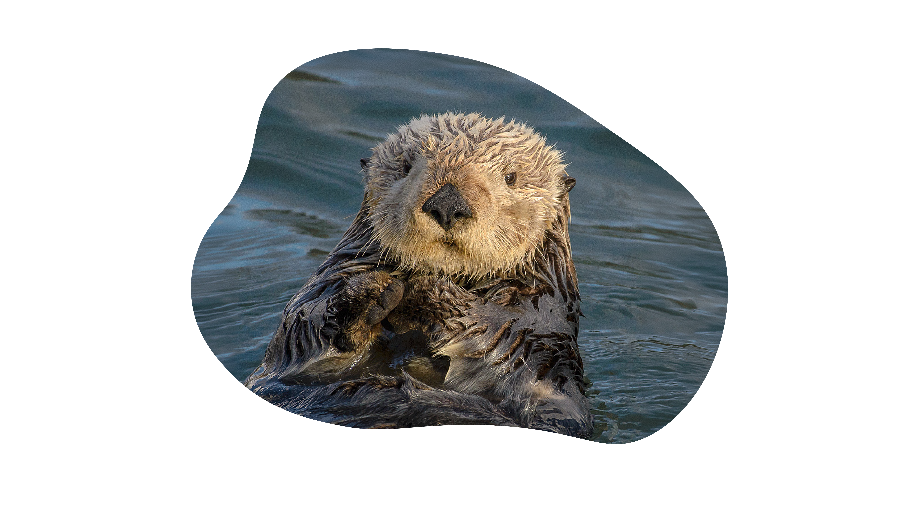

De zeeotter (Enhydra lutris) is een grote, in zee levende otter. De soort komt voor rond de noordelijke kusten van Azië en de noordwestelijke kusten van Amerika. Volwassen zeeotters wegen tussen de 14 en 45 kg en behoren daarmee tot de zwaarste marterachtigen. In tegenstelling tot andere zeezoogdieren hebben zeeotters een uitzonderlijk dikke vacht waarmee ze zich warm houden. Hoewel ze zich over land kunnen verplaatsen, leven zeeotters uitsluitend in zee.
Zeeotters komen voor in kustwateren. Ze jagen voornamelijk op ongewervelde zeedieren zoals zee-egels, weekdieren en kreeftachtigen, maar voeden zich ook met sommige kleine vissoorten. Het foerageergedrag is in verschillende opzichten opmerkelijk. De zeeotter maakt bijvoorbeeld gebruik van stenen om prooien los te maken en om schelpen te openen. Zeeotters vormen een sleutelsoort: ze houden hun ecosysteem in balans door het overheersen van zee-egels tegen te gaan.
De zeeotter kan tot 1,5 meter lang worden en tot 45 kg wegen. In tegenstelling tot de visotter met een ronde staart, heeft de zeeotter een platte staart. Die gebruikt hij om te zwemmen samen met zijn sterke achterpoten die voorzien zijn van grote zwemvliezen. De zeeotter gebruikt de voorpoten niet bij het zwemmen. De zeeotter heeft onder zijn oksel huidplooien waarin hij voedsel kan bewaren.